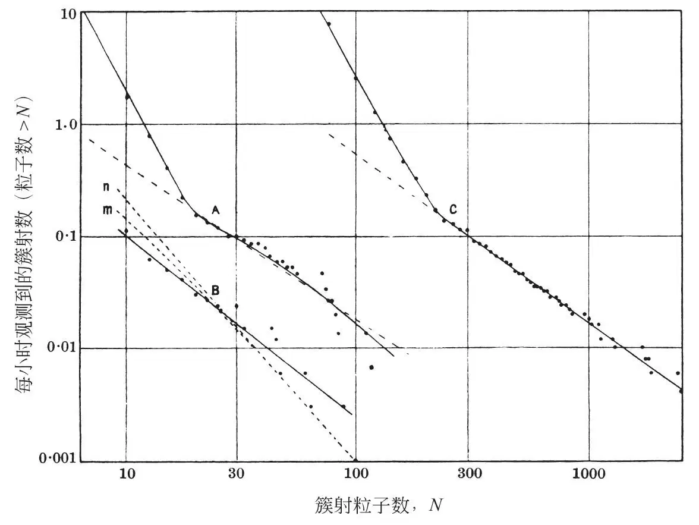
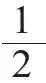

英文
英文卡迈克尔，周长宁
编者按
从20世纪初开始，由于各种原因，很多物理学家都对宇宙射线的研究给予了关注。首先，它们似乎是由快速运动的粒子组成，但究竟是什么粒子，这在很长一段时间里都是未知的。这些粒子的能量大大地超过了在实验室里人工所能产生出来的能量，并且它们似乎能够为宇宙中远距离的现象和物质性质的研究提供线索。本论文是基于伦敦地面以下30米处的观察结果，该地是伦敦地铁网络霍尔本车站一个废弃不用的站台。实验的目的是采用对电荷灵敏的电离室测量宇宙射线粒子簇射的数目。C曲线代表地球表面的实验结果，A曲线代表一个在地下车站为时150个小时的实验结果，B曲线代表为时350小时的实验。A和C实验结果曲线的弯曲则用来显示宇宙射线粒子簇射产生机制的变化。 英文
把一个小电离室（容量为1升）放在剑桥的海平面上，对其中10个或更多粒子的簇射产生的宇宙射线电离暴进行了记录，并且多亏了布莱克特教授和布拉迪克博士的热心帮助，我们在伦敦地面以下30米的地方也完成了同样的实验。在本文要讨论的数据中，A曲线（150小时）和B曲线（350小时）是在小电离室上部没有覆盖铅或者其他密度较大的引发簇射的物质时得到的（电离室内壁由硬铝制造，厚1.2厘米，以尽可能避免在电离室内由连续倍增效应产生的簇射）。C曲线（500小时）是我们在海平面上用大电离室（容量为175升，壁厚0.3厘米，钢制）重复类似实验得到的结果，我们中的一人[1]已于1936年发表了大部分数据，当时他也描述了记录的方法。从这些曲线中可以得到每小时的簇射数量，即有N个或是更多的粒子横穿电离室；簇射粒子数N是在每厘米90个离子对的普通氩气的特定离子化过程中得到的。 英文
在海平面上的大电离室观察到的离子爆发过程（C曲线）所产生的簇射粒子数量要比在小电离室里（A曲线）看到的数量多很多，而这两条曲线的斜率都在每小时观测到的簇射线为0.16处出现明显变化。如果将小电离室里的簇射量大小乘以10，那么A曲线和C曲线会很好地重叠在一起。我们根据簇射量（这一点可以从发生率中很明显地看到）与所用薄壁电离室的横截面面积大致成正比这一现象可以推断出，所发生的簇射多半是广延簇射，它们产生于空气中并且与俄歇及其同事[2]用计数器测量到的簇射属于同一类型。我们不能指望由此得到精确的面积之比（大约是1∶30），因为当窄簇射或射线凝聚效应的横截面比大电离室的面积小时更容易引起非均匀的离子爆发。 英文

在地面以下测量到的爆发（B曲线）肯定是由穿越了的宇宙射线产生的。利用霍米·巴巴[4]在其论文里给出的数据，假设介子的自旋为

，我们已经计算出由电子被介子撞击而产生的级联簇射在地铁站里的预期曲线分布。根据欧拉和海森堡[3]的方法，我们认为大气中介子累积能量分布曲线的指数为1.87。如果我们假设在地面以下的实验中，簇射区域的横截面不比电离室大多少，那么从计算结果中可以看到（m曲线）：仅由介子和电子的碰撞过程所产生的簇射就足以解释在地面以下记录的爆发了（实际上测量到的大型爆发数值要多于计算值，对这种差异的理论解释将在以后讨论）。 英文
在海平面上用上述方法得到的计算值（n曲线）比观察到爆发的数值低很多，即使我们假设簇射范围非常窄，以至于每次爆发中的所有簇射粒子都能够横穿小电离室，但事实上我们已经知道，在海平面上所观察到的大部分簇射范围至少都比大电离室的范围大。因此，我们得出结论：在海平面上所观察到的少量爆发簇射是由介子撞击电子产生的。这种簇射的量不够大，可能是由介子的自发衰退造成的，这也许可以作为由海平面上的观测数据得到的n曲线有一个斜率较大的部分的原因。 英文
因此，我们认为，几乎所有能在位于海平面上的薄壁电离室内产生爆发的簇射都来自于大气层中非常高的地方，而海平面上分布曲线所表现出的双重特性（由斜率的变化可以看出）并不是由于存在两类簇射，而是由于以下原因（这一点俄歇[2]也注意到了），即每次爆发簇射都有一个由密排粒子组成的核心，其周围是由排列非常松散的粒子组成的广大边界地区，而在这些边界地区就会产生规模较小的爆发。 英文
（李忠伟 翻译；马宇 审稿）